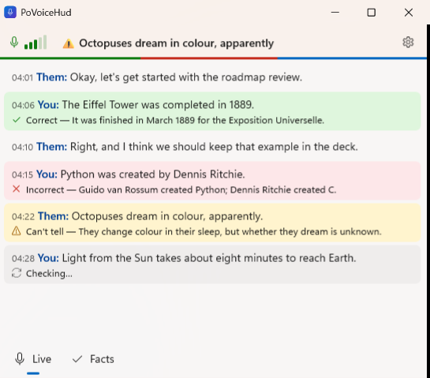

A standard window
Debug build with --demo, captured with PrintWindow at 150 %. "Before" is the borderless pill from earlier today; "after" is the working tree on 2026-10-20.
Before: a borderless pill

After: title bar, minimize, maximize, close

1 2 3 4- Title bar with the app icon and name, on Mica. Drag it to move, double-click to maximize, and use Win+Arrow to snap.
- Minimize, maximize and close. Minimize replaces the old "click the headline to collapse", and close quits (as before, so does the tray or Settings).
- The header keeps the mic, the latest verdict and ⚙, but the headline is plain text now: there's nothing left for it to open or close.
- The pages fill the window at any size, down to 420 × 320, and scroll inside it. The window remembers its size and position, and stays on top of other windows.